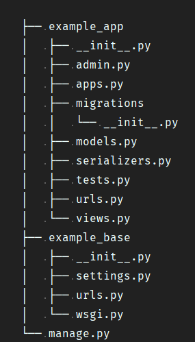
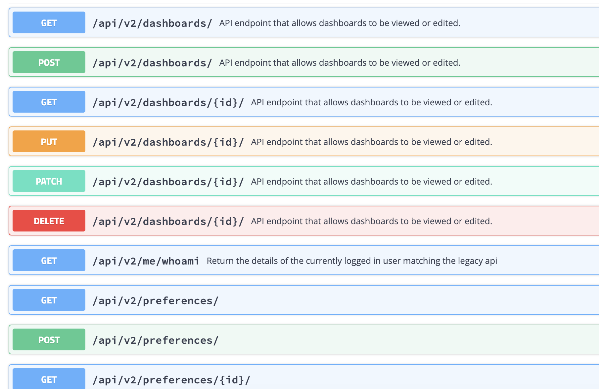
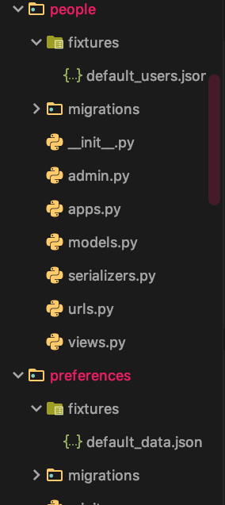

Development¶
Bellow are examples for each part of the Django REST framework based project.
The sections are Models - models.py, View - views.py, Serializers - serializers.py, URLS - urls.py, Admin - admin.py, App - apps.py, Data - fixtures Folder & Structure
Structure¶
This structure will reduce merge conflicts and give the project a separation of concerns regarding each application.
If a new app is added to the project we will need to add it to the settings file connected to the app config within (your_new_app/app.py):
INSTALLED_APPS = [
'django.contrib.admin',
'django.contrib.auth',
'django.contrib.contenttypes',
'django.contrib.sessions',
'django.contrib.messages',
'django.contrib.staticfiles',
# 3rd party apps
'rest_framework',
'rest_framework_swagger',
'django_filters',
# owf apps
'domain_mappings.apps.DomainMappingsConfig',
'intents.apps.IntentsConfig',
'owf_groups.apps.OWFGroupsConfig',
'people.apps.PeopleConfig',
'roles.apps.RolesConfig',
'stacks.apps.StacksConfig',
'widgets.apps.WidgetsConfig',
'dashboards.apps.DashboardsConfig',
'preferences.apps.PreferencesConfig',
]
By extending the application to the app config within your_new_app/app.py we ensure that no other folders in the project are mistaken by Django for applications.
Models - models.py¶
Models are the formulation and design of the database, this will also be a place where we can make methods to call properties of the data that would otherwise require additional code elsewhere in the project.
So for example if we were to have a model that extends the Abstract base user with permissions and timestamp data:
from django.db import models
from django.contrib.auth.models import AbstractUser
class TimestampedModel(models.Model):
created_at = models.DateTimeField(auto_now_add=True)
updated_at = models.DateTimeField(auto_now=True)
class Meta:
abstract = True
class CustomUser(TimestampedModel, AbstractUser):
ROLE_CHOICES = (
('admin', 'Admin'),
('employee', 'Employee'),
)
email = models.EmailField(unique=True, null=True)
first_name = models.CharField(max_length=30, blank=True)
last_name = models.CharField(max_length=150, blank=True)
def get_first_and_last_name(self):
"""
What this method is doing is allowing the developer to access data quickly without
writing the query later in the code base over and over again.
"""
return f'{self.first_name} {self.last_name}'
The methodology of working with the models should follow the “Fat Model” methodology allowing for less code to be written throughout the application as well as more readable views where the code can very restrictive and error prone.
After creation (running the migrations) the only modifications should be the methods associated to the data model otherwise data can become corrupted.
View - views.py¶
The django-filter library includes a DjangoFilterBackend class which supports highly customizable field filtering for REST framework.
viewsets -
from django_filters.rest_framework import DjangoFilterBackend
from rest_framework import viewsets
from rest_framework.permissions import IsAuthenticated
from .models import Preference
from .serializer import PreferenceSerializer
class PreferenceUserViewSet(viewsets.ModelViewSet):
queryset = Preference.objects.all()
serializer_class = PreferenceSerializer
permission_classes = (IsAuthenticated,)
filter_backends = [DjangoFilterBackend]
filterset_fields = ['namespace', 'path']
http://localhost:8000/api/v2/preferences/?namespace=test&path=del
This is only used if the permissions change per action.
def get_permissions(self):
"""
Instantiates and returns the list of permissions that this view requires.
"""
if self.action == 'list':
permission_classes = [IsAuthenticated]
else:
permission_classes = [IsAdmin]
return [permission() for permission in permission_classes]
Serializers - serializers.py¶
Data validation should not be handled in the view it should be handled in the serializer.
from rest_framework import serializers
class EventSerializer(serializers.Serializer):
description = serializers.CharField(max_length=100)
start = serializers.DateTimeField()
finish = serializers.DateTimeField()
def validate(self, data):
"""
Check that start is before finish.
"""
if data['start'] > data['finish']:
raise serializers.ValidationError("finish must occur after start")
return data
Above is an abstract serializer for serialization no associated with models.
class UserSerializer(serializers.ModelSerializer):
# Validation is taking place in the serializer as well as the models.py
profile = ProfileSerializer()
class Meta:
model = User
fields = ['username', 'email', 'profile']
def create(self, validated_data):
profile_data = validated_data.pop('profile')
user = User.objects.create(**validated_data)
Profile.objects.create(user=user, **profile_data)
return user
Methods of the serializers can be found:
https://www.django-rest-framework.org/api-guide/serializers/
Custom methods can be added to the validators with:
def multiple_of_ten(value):
if value % 10 != 0:
raise serializers.ValidationError('Not a multiple of ten')
class Record(serializers.Serializer):
score = IntegerField(validators=[multiple_of_ten])
All serializers can take these built in methods
.data - Returns the outgoing primitive representation. .is_valid() - Deserializes and validates incoming data. .validated_data - Returns the validated incoming data. .errors - Returns any errors during validation. .save() - Persists the validated data into an object instance. There are four methods that can be overridden, depending on what functionality you want the serializer class to support:
.to_representation() - Override this to support serialization, for read operations. .to_internal_value() - Override this to support deserialization, for write operations. .create() and .update() - Override either or both of these to support saving instances.
The methodology of working with the serializers should follow the “Fat Serializer” methodology allowing for less code to be written throughout the application as well as more readable views where the code can very restrictive and error prone.
URLS - urls.py¶
The URLS file should be using the new version of Django URLS syntax so the use of regular expressions will be very limited or not even needed at this point. Using things like “ViewSets” provided through DRF (Django Rest Framework) we can make use of a singular URL to complete all actions.
from .views import PreferenceUserViewSet
from rest_framework import routers
router = routers.SimpleRouter()
router.register(r'preferences', PreferenceUserViewSet, base_name='user_preferences')
urlpatterns = [
]
urlpatterns += router.urls
This is depicted in the Swagger docs at the root URL. Just be sure to use the session login at the top right of the screen.
{kind=link}
If you are making a one off URL for a specific action that falls out of the scope of the ViewSet, its best to use the path provided by Django that will not make you use a regular expression.
from django.urls import path
from people.views import PersonDetailView
urlpatterns = [
path('me/whoami', PersonDetailView.as_view(), name='person-detail'),
]
Admin - admin.py¶
The admin is very simple and is good for creating data that can be later loaded to the application for other developers to reference so that we are all working with the same dataset allowing everyone to be on the same thought process. This data can be also referenced in the tests at a later point.
from django.contrib import admin
from .models import Preference
class PreferencesAdmin(admin.ModelAdmin):
list_display = ('id', 'version', 'path', 'namespace', 'value', 'user_id')
search_fields = ('path', 'user_id',)
verbose_name = 'Preference'
verbose_name_plural = 'Preferences'
admin.site.register(Preference, PreferencesAdmin)
python manage.py dumpdata
Also see Data - fixtures Folder
App - apps.py¶
Install the application to the project with this config that comes with each app within the project. See Structure
from django.apps import AppConfig
class PreferencesConfig(AppConfig):
name = 'preferences'
Data - fixtures Folder¶
Data that can be pre-loaded for project helps everyone to understand how to work with the existing API, it is simple and easy to create this data.
{kind=link}
The data can be loaded with the command python manage.py loaddata path_to_the_data, existing data can be loaded with
the command make make populate.
When adding a fixture of data to the project please add it to the Makefile / make.bat.
populate: ## adds data to the database from fixtures
python manage.py loaddata dashboards/fixtures/default_objects.json people/fixtures/default_users.json owf_groups/fixtures/default_objects.json preferences/fixtures/default_data.json loaddata stacks/fixtures/default_objects.json